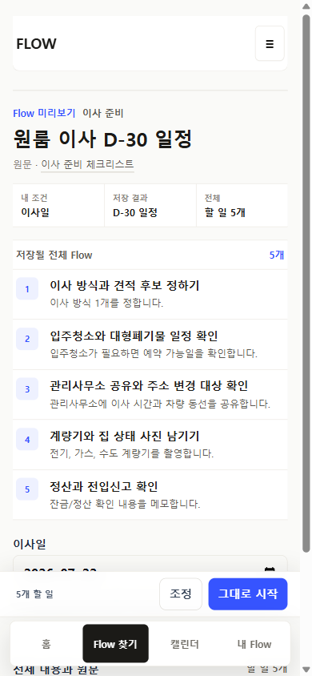
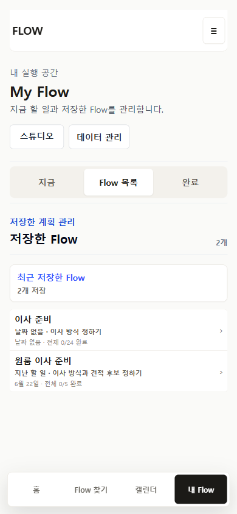
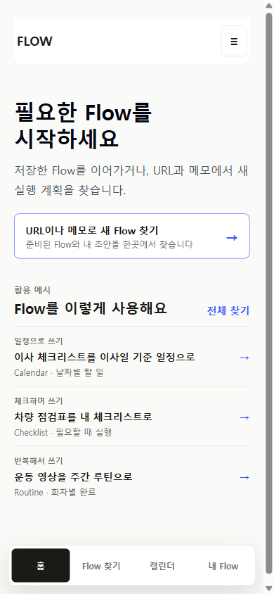
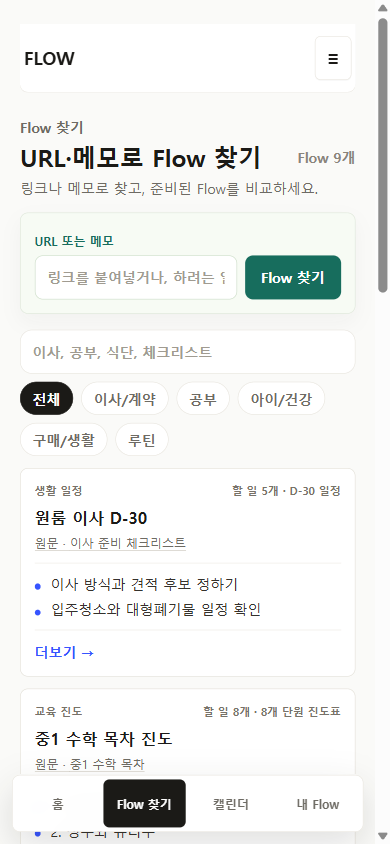

FlowMe의 Home · Flow 찾기 · URL lookup · public 상세 · 저장 receipt · My Flow · Calendar가 하나의 사용자 Flow로 이어지는지 독립 검토했다. 같은 이사 원문이 진입점에 따라 24개/5개, 별도 제목, 별도 저장 객체로 갈라진다. 앱 코드는 바꾸지 않았고, 실제 관찰 사용자는 0명이다.
판정 · bounded_cross_entry_alignment추천 대안 · B가설 6/6 재현앱 코드 변경 없음observed-user 0
핵심 판정
감사는 반박되지 않았다. 그러나 이미 P26에서 “모든 표면은 하나의 Flow object” 계약이 확정되어 있으므로, 계약을 다시 여는 것이 아니라 그 계약을 아직 구현하지 못한 격차를 닫는 bounded alignment가 필요하다.
4같은 AJD 이사 원문의 사용자 route
24 / 5진입점에 따라 달라지는 전체 항목 수
2두 entry 저장 후 남는 중복 My Flow 객체
2 / 4작동하는 artifact 선택 (moving·vehicle 죽음)
5 / 9Find catalog 중 legacy Flow Map 세대
유지P32 focused workspace · 4탭 IA · /f shell
현재 결정(2026-07-20 P26)은 Flow Map을 내부 bundle로 두고 Home·찾기·저장·My Flow·Calendar·export가 하나의 사용자 Flow object를 쓰도록 정한다. Production은 이 계약을 아직 지키지 못한다 — 이는 새 방향이 아니라 미완의 롤아웃이다.
방법과 증거의 한계
확인한 것 (신뢰 가능)
current production 화면 8장 (390px, handoff 캡처)
GitHub review branch source (AppClient, FlowArtifactDataPreview, storage, url-first-lookup 등 manifest)
current 제품 결정(DECISIONS.md P26~P32) 및 route-evidence 마커
reference app 현행 문서(Notion·Todoist·Wanderlog·Hevy)
직접 하지 않은 것 (inaccessible)
이 검토에서의 라이브 브라우저 조작 / console 실측
실시간 스크린리더·키보드 통과
1024/1440 live overflow 재계측
실제 사용자 관찰 (자동 simulation ≠ 검증)
이 문서의 규칙
기존 audit 수치를 그대로 복사하지 않고 재판정
가짜 사용량·리뷰·평점을 만들지 않음
긴 설명으로 interaction 문제를 덮지 않음
왼쪽 = current 실제 화면 / 오른쪽 = 제안 wireframe
6개 감사 가설 재판정
confirmed · reframed · rejected · inaccessible 로 독립 판정했다.
#
가설
판정
독립 근거 / reframe
1
같은 AJD 이사 원문이 Home 24 / Find 5 / URL 5 등 4 route로 갈린다
confirmed
03·04 화면에서 제목(이사 D-30 준비 vs 원룸 이사 D-30 일정)·항목 수·shell·CTA가 모두 다름. reframe: route가 여러 개인 것 자체가 아니라 route마다 canonical content가 다른 것이 결함.
2
두 entry를 저장하면 My Flow에 별도 객체 2개가 생긴다
confirmed
05 화면에 「이사 준비 0/24」와 「원룸 이사 준비 0/5」가 동시 존재. 완료·날짜·메모가 서로 이어지지 않음.
3
Find catalog 9개 중 5개 legacy Flow Map, 4개 artifact-first
confirmed
route-evidence findCatalog + 02 화면. 한 목록 안에서 무엇을 누르냐에 따라 상세·조정·저장 후 이동이 달라짐.
4
moving/vehicle artifact 버튼은 죽고 wedding/workout은 작동
confirmed +reframed
wedding(07) CTA는 「캘린더 6개로 시작」으로 선택을 반영, moving(03)·vehicle(06) CTA는 「날짜 없이 시작」 고정. reframe: category 문제가 아니라 change handler가 일부 category에만 연결된 false affordance.
5
Home 차량 generic checklist 약속 ≠ D-14 Calendar target
confirmed
Home(01) 「차량 점검표를 내 체크리스트로 · 필요할 때 실행」 vs target(06) 「자동차검사 D-14 준비 · 검사일 · 캘린더 10개」. job과 기본 artifact가 모두 어긋남.
6
날짜 없는 workout의 My Flow에 raw RRULE 노출
confirmed (경미·copy)
08 화면에 「FREQ=WEEKLY;BYDAY=MO,WE,FR」 노출. reframe: 계산은 정상(Calendar occurrence 생성 O)이고 display adapter 누락 — 낮은 심각도.
추가 발견 — Home 예시(vehicle)가 Find에서 재발견되지 않음(「차량 점검」 검색 0건, server fallback↔hydrated catalog inventory 불일치). 이는 broader discovery 재설계가 아니라 canonical registry가 Home·Find 양쪽을 같은 집합으로 채우면 해소된다.
핵심 증거 · 같은 원문, 다른 Flow
아래는 current production 실제 화면(390px)이다. 같은 AJD 이사 체크리스트 원문에서 출발한다.
CURRENT · Home → /f/moving-d30-basic
이사 D-30 준비 · 24개 · share shell(공유 화면) · 날짜 그룹 타임라인 · 검은 「날짜 없이 시작」 · distinct receipt

CURRENT · Find → /flow-maps/moving-d30
원룸 이사 D-30 일정 · 5개 · 4탭 app shell(하단 nav 있음) · 번호 리스트 · 파란 「그대로 시작」 · receipt 없음, 저장 즉시 My Flow

RESULT · 두 entry 저장 후 My Flow
중복 — 「이사 준비 0/24」 + 「원룸 이사 준비 0/5」가 별도 객체로 공존. 사용자는 어느 것을 실행/삭제할지 알 수 없음.
8 personas × 3 sessions · 24-cell 여정
각 persona는 발견 → 상세 이해 → 조정 → 저장 → receipt → My Flow → Calendar/export → 재진입 흐름을 세션 간 상태를 유지하며 실행한다. partial은 “기능이 없다”가 아니라 “화면은 되지만 같은 원문이 하나의 Flow로 이어지지 않는다”는 뜻이다. 상세 셀은 persona-journey-scorecard.json.
supported 6partial 10missing 8hidden/blocked 0
persona
Session 1 · 발견·이해·조정·저장
Session 2 · My Flow·Calendar 실행
Session 3 · 재진입·재발견
P1 Home-first moving
partial 저장 가능하나 체크리스트 토글이 죽어 있음
supported P32 workspace로 단일 객체 실행 정상
missing Home·Find·URL 3 entry가 한 객체를 가리키지 않음
P2 Find-first moving
partial legacy 5개 · 조정은 이름/포함 위주
partial receipt 없이 즉시 My Flow · 객체는 정상
missing Home target 저장 시 중복 · 화해 UI 없음
P3 URL-first moving
partial lookup은 5개 variant · 24개와 동일 인식 불가
partial 별도 slug·객체로 저장
missing 4 alias가 저장·완료·날짜·메모를 공유하지 않음
P4 Existing duplicate returner
missing “같은 원문” 단서·중복 경고 없음
missing 한쪽 완료가 다른쪽에 반영 안 됨
missing reconciliation affordance 자체가 없음
P5 Vehicle checklist expectation
missing 약속(체크리스트)이 target(D-14 캘린더)과 다르고 토글도 죽음
partial undated 저장·Calendar는 되나 intent 이해 미검증
missing 「차량」 검색 0건 · fallback↔hydrated 불일치
P6 Recurring workout
supported Home·Find 동일 /f · 선택 작동 · 다음 3회차
partial Calendar 정상, undated My Flow에 raw RRULE
supported export series/occurrence·재진입 실행 이어짐
P7 Wedding positive control
supported 2개 card 분리 · 3-way artifact 선택 작동
supported receipt·단일 객체·export eligible
supported 추출 가능한 grammar(→ moving에 이식)
P8 Keyboard / responsive
partial /f와 /flow-maps shell 구조 상이 · 라이브 SR inaccessible
partial viewport별 anatomy 상이 · 1024 overflow 미검증
partial 반복 저장 시 중복 객체 · focus 복원 inaccessible
패턴: 세로로 wedding·workout(작동하는 content-shape)은 초록, moving·vehicle·URL·duplicate(identity가 갈리는 곳)는 붉은색. 결함은 “화면 품질”이 아니라 진입점 간 identity 연속성에 몰려 있다.
제안 방향 · ALTERNATIVE B
canonical registry + 역할별 shell + 하나의 저장 identity
Home과 Find는 역할이 다른 채로 둔다(Home=사용 예·이어가기, Find=탐색·비교). 대신 모든 진입점이 하나의 canonical Flow(같은 제목·source·count·artifact·저장 상태)로 해석되게 만든다. 아래는 왼쪽 current 실제 화면 ↔ 오른쪽 제안 wireframe(390px).
공통 identity 블록 (모든 진입점 반복)
원문 · 이사 준비 체크리스트
이사 D-30 준비
전체 24개캘린더·체크리스트·메모✓ 내 Flow에 있음
canonicalFlowId: flow/moving-d30 · aliases 4→1
① 390 · Home 활용 예시 카드
약속 문장 대신 열릴 Flow의 정체를 카드에 노출하고, 이미 저장했으면 이어가기로 바뀐다.

CURRENT · 카드 = 약속 문장(“이사 체크리스트를 이사일 기준 일정으로”). Find의 5개 identity와 연결이 보이지 않음.
FLOW≡
활용 예시전체 찾기
Flow를 이렇게 써요
일정으로 쓰기 · 원문 이사 준비 체크리스트
이사 D-30 준비
캘린더 24개✓ 내 Flow · D-30 진행 중
Find에서도 같은 Flow이어서 실행 →
제안: 카드 제목 = canonical Flow 제목 · 저장 상태 노출 · 재방문 시 “이어서 실행”
홈
Flow 찾기
캘린더
내 Flow
제안 B · 역할(사용 예)은 유지하되 canonical 제목·count·저장 상태로 연결.
② 390 · Find catalog 카드
9개 catalog가 한 anatomy로 통일된다. legacy 번호 리스트 변형 제거, Home 예시와 동일 identity 명시.

CURRENT · 첫 카드 “원룸 이사 D-30”(5개, legacy Flow Map). 제목·count가 Home 24개와 다름.
FLOWFlow 9개
전체이사·계약루틴
생활 일정 · 원문 이사 준비 체크리스트
이사 D-30 준비
전체 24개캘린더·체크리스트·메모
이사 방식과 견적 후보 정하기
주소 변경 · 전입신고 확인
Home 예시와 동일 Flow자세히 →
제안: 모든 카드 동일 anatomy · Flow Map은 내부 bundle로 숨김 · 같은 canonical 상세로 진입
홈
Flow 찾기
캘린더
내 Flow
제안 B · 탐색 역할 유지 + canonical 제목/count/artifact + “Home 예시와 동일 Flow”.
③ 390 · canonical 이사 save-before
하나의 제목·count·identity. 5개는 별도 객체가 아니라 이 Flow의 scope preset(“핵심 단계만”)으로 흡수된다.
CURRENT · legacy 5개 · 파란 “그대로 시작” · receipt 없음. Home 24개와 별개 객체가 됨.
추천 = B. A는 근본(catalog·artifact·화해)을 남기고, C는 이미 확정된 Home/Find 분리·4탭 IA를 근거 없이 재오픈한다. B만이 P26 계약을 구현하면서 P31/P32의 positive control을 보존하고, 각 stage를 flag로 되돌릴 수 있다.
Reference 연구 · 가져올 것 / 안 가져올 것
구조 원칙만 번역한다. 기능·화면 복제, full planner 확장, 가짜 social proof는 배제한다.
 CURRENT · Home → /f/moving-d30-basic
CURRENT · Home → /f/moving-d30-basic